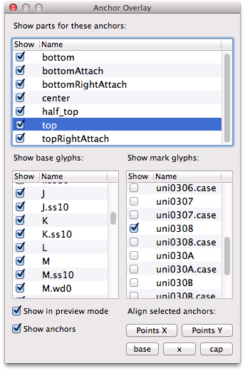
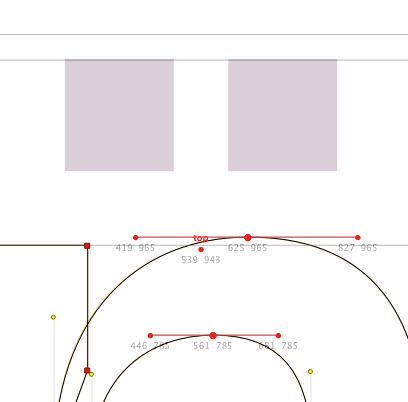

Anchor Overlay displays a live preview of components, e. g. diacritical marks, that match the anchors in the current glyph, and allows you to position the anchors using outline points or font metrics as reference.

The top list displays all anchors found in the current font. Check or uncheck the entries to set the visibility of all glyphs attached to these anchors globally.
Select an entry in the top list to display the corresponding mark glyphs in the bottom list.
Uncheck any entry in the bottom list to hide a mark glyph. For example, displaying only symmetrical mark glyphs makes it easier to find the correct horizontal position of a base anchor.
Double-click any entry in the bottom list to open it in the current glyph window.
Uncheck «Show in preview mode» to hide the overlay while the Preview key is pressed.
Uncheck «Show anchors» to hide anchors themselves in the glyph window.
Visibility settings are saved for each anchor and glyph name. Find and remove the corresponding entries in the preferences.plist file in your RoboFont plugins folder in case you need to reset it completely.
An anchor will overlay all glyphs which contain a matching anchor, i. e. its name is that of the base anchor prefixed with an underscore.
Example: If your current glyph contains a base anchor called topLC, all glyphs that contain a mark anchor called _topLC will be previewed at the base anchor position.
Anchor names must be unique per glyph. Anchor Overlay will print a warning in the Output window if duplicate anchor names are found in the same glyph.
Double-click in the glyph window to add an anchor. The anchor will be automatically named depending on the clicked position (left, center, right, top, bottom). If an anchor already exists in the clicked part of the glyph, the suffix «Attach» will be added to the name. Any additional double-clicks will be ignored.

Select the points you want to use as reference, then hold the Shift key while clicking the anchors that you want to align.
| Button | Shortcut | Description |
|---|---|---|
| Points X | shift-X | Center the selected anchors horizontally between the leftmost and rightmost of the selected points. If no points are selected, center the selected anchors between left and right sidebearing. |
| Points Y | shift-Y | Center the selected anchors vertically between the bottommost and topmost of the selected points. If no points are selected, center the selected anchors relative to the cap height. |
| base | Move the selected anchors vertically to the base line. | |
| x | Move the selected anchors vertically to the x-height. | |
| cap | Move the selected anchors vertically to the cap height. |
Use the arrow keys to move selected anchors by 10 font units. Hold the shift key to change the distance to 5 units or the option key for 1 unit.
The Anchor Overlay tool must be activated after the font has been opened. It currently doesn’t pick up a change of the current font.
When you move base anchors, they will be correctly previewed in the current glyph window, but not when you edit the corresponding mark anchor. This is typically only an issue if you edit base and mark glyphs without changing tools inbetween. Activate the Edit tool and then go back to the Anchor Overlay tool to update the anchor positions.
A feature that would help automatically add anchors to all glyphs is not yet implemented.
Anchor Overlay is © 2015 by Jens Kutilek.